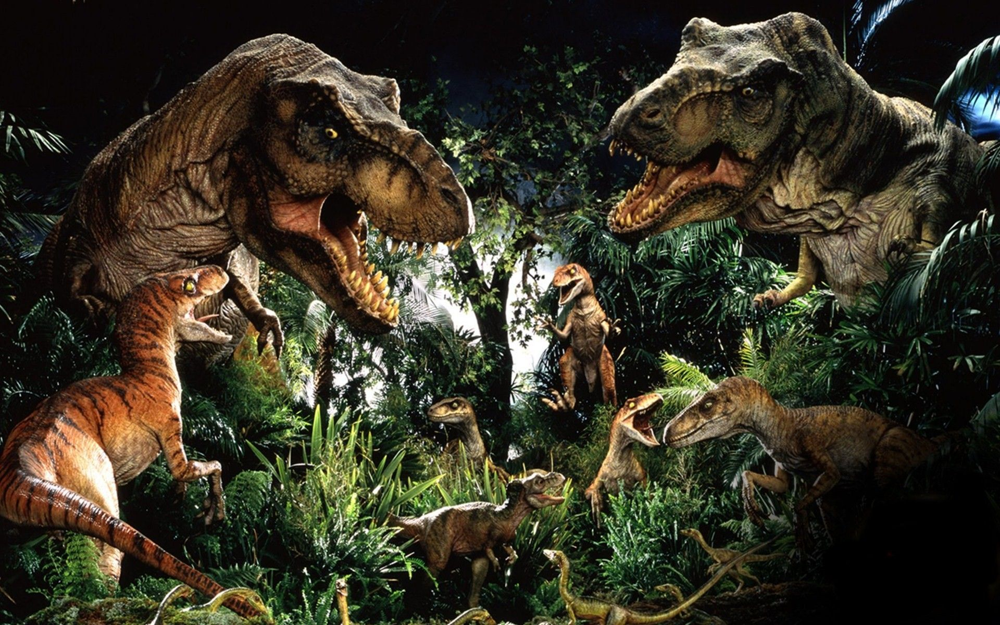

La era dorada de los dinosaurios.
La era de oro para los dinosaurios comienza apartir de 1980 hasta finales de los años 2000, esta es una epoca que se caracteriza por la cantidad de descubrimientos realizados por los cientificos y los cambios a la formula que se manejaba con los dinosaurios por demasiado tiempo, puesto que la teoria de que todos los dinosaurios vivian en una sola epoca y que los mamiferos convivian con los dinosaurios se desacredita por completo, separando a la prehistoria en tres epocas importantes, la primera de estas 3 epocas es el triasico, el jurasico y el cretacico aunque tambien se plantearon más epocas aparte de estas tres como lo eran el devonico, el pleistoceno e incluso el permico.
En esta epoca también se genero un fenómeno social conocida como la fiebre de los dinosaurios donde la mayoria de la media en general estaba llenisima de cosas relacionadas con los dinosaurios, algunos de estos contenidos fueron la serie con gran reconocimiento y cariño hasta el dia de hoy que era Walking With Dinosaurs, tambien la saga original de Jurassic Park y algunas series animadas como lo eran Dino-Riders y Dinoplativolos. Todo este tipo de contenido generaria un interes en los más jovenes por la paleontologia y los dinosaurios, gracias a esta gran difusion realizada por muchos medios se logro que muchos grupos de paleontologos fueran financiados y se lograran descubrir muchos más fosiles de especies de dinosaurios, tambien se comenzaron las investigaciones mucho más a detalle de los dinosaurios y grandes mamiferos. Esta epoca se caracteriza por la belleza de las obras con un aspecto y colores más vivos.
Es tambien en estos momentos que la depicción de los dinosaurios como seres lentes y reptilianos cambia totalmente a una concepción mucho más avanzada y se les ve como seres mucho más activos capaces de realizar movimientos complejos, y tambien la idea de que eran creaturas de sangre fria cambia a creaturas de sangre caliente. Apesar de que se realizaron avanzes en esta epoca, aun asi gran parte de las depicciones de la epoca aun era altamente incorrectas pero no tanto a las anteriores epocas, pues aun faltaban las plumas y menos escamas en algunos de los casos.
